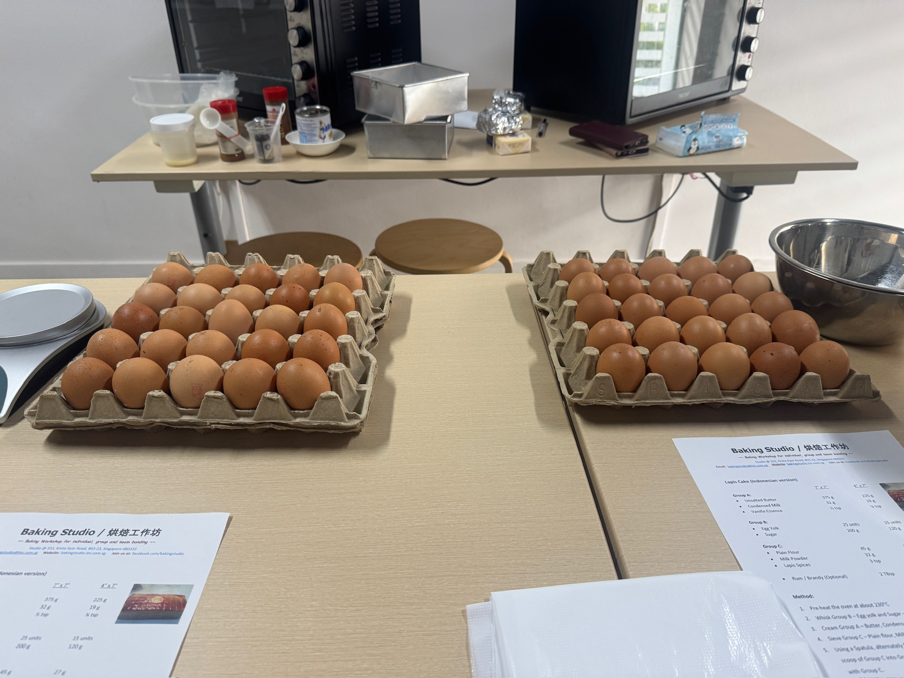
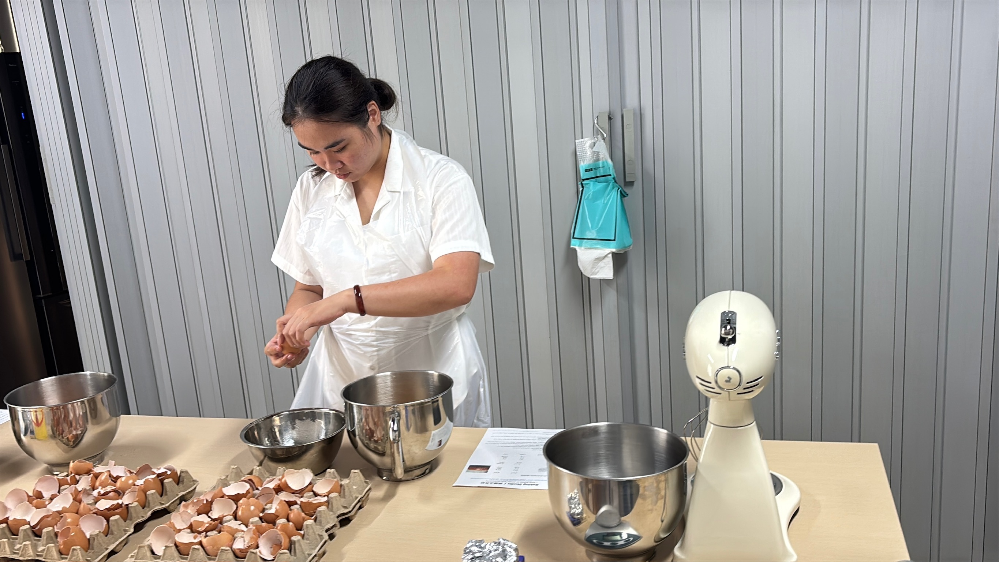
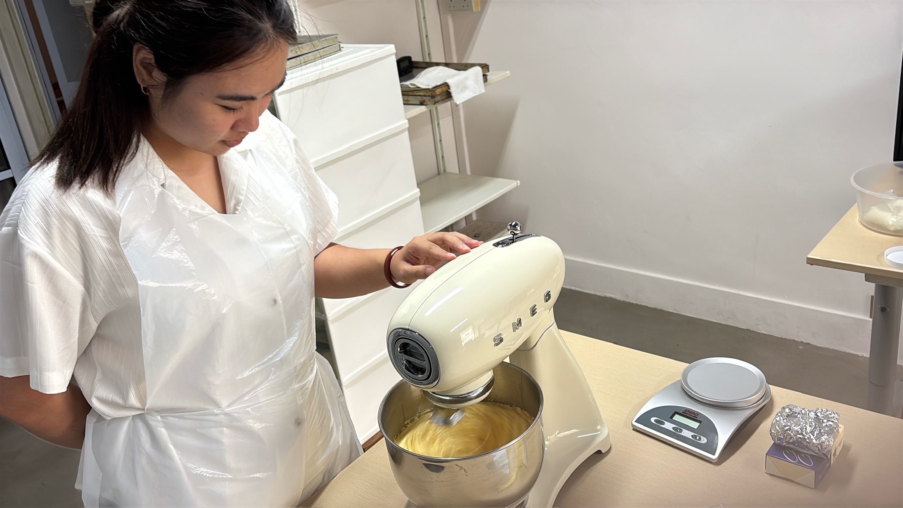
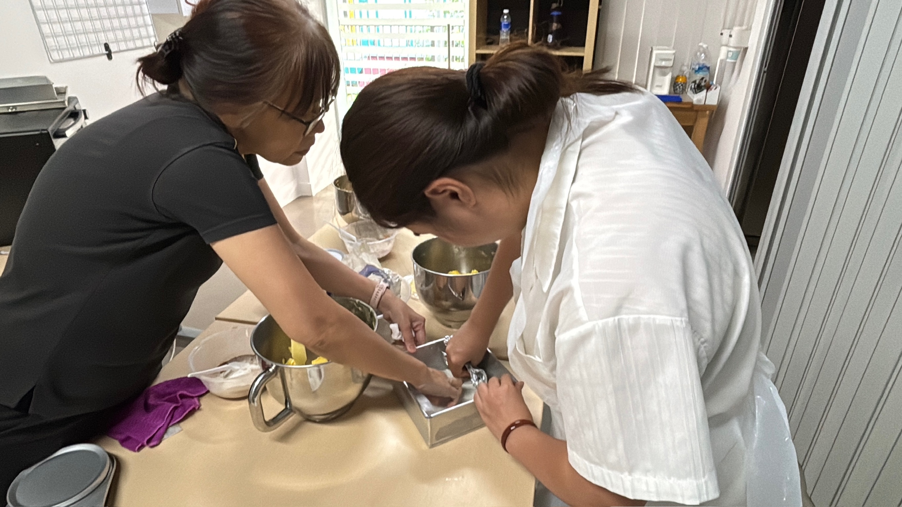
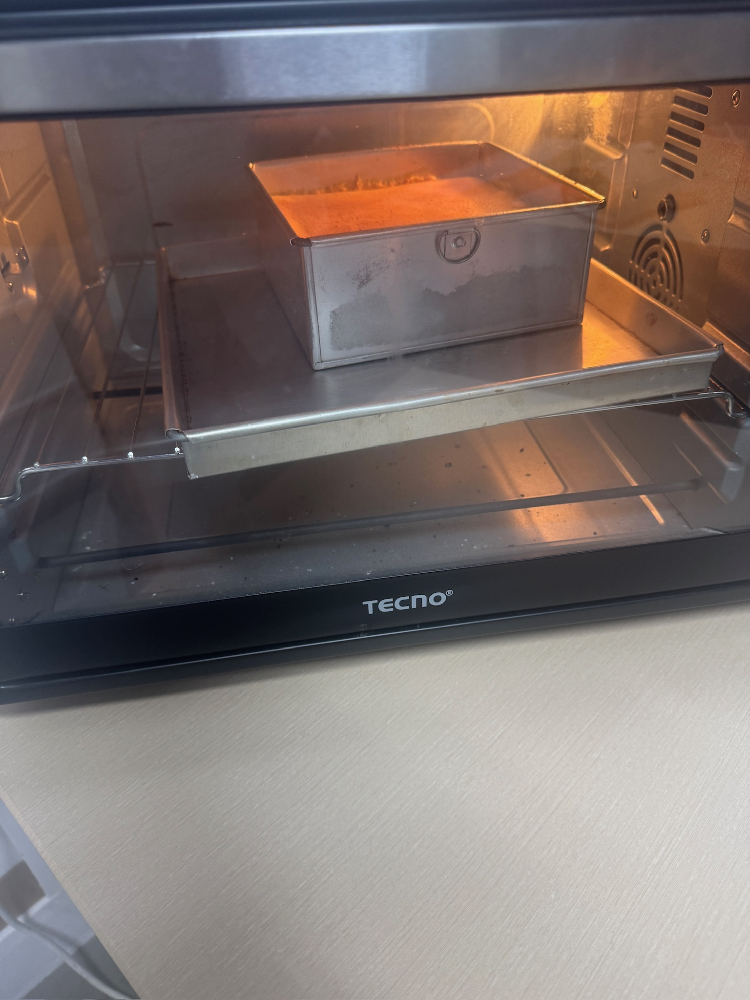
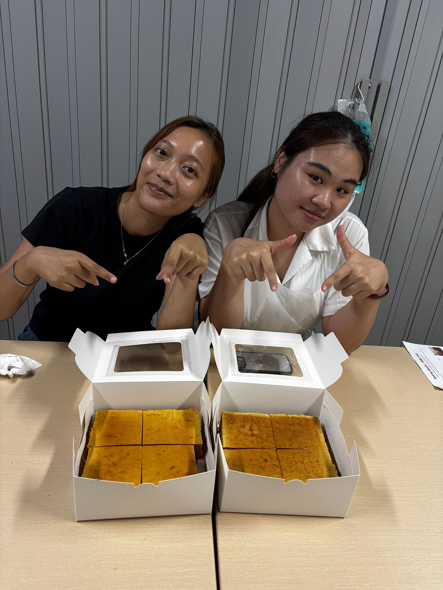
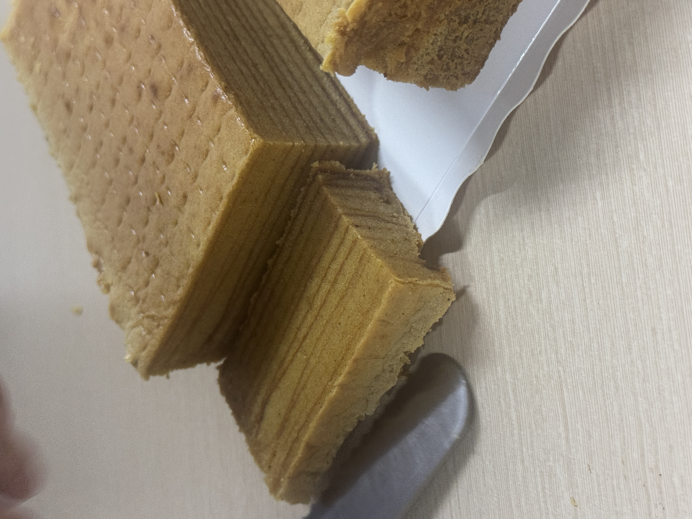
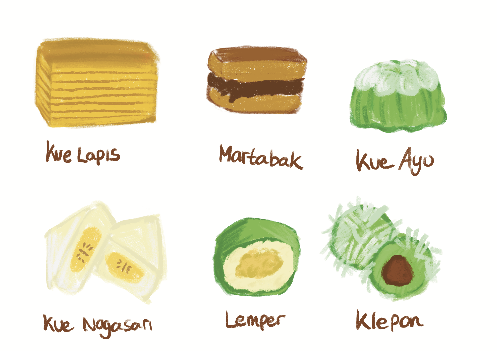

Workshop
During this week, I attended a baking class workshop with my friend on how to make traditional Indonesian Kue Lapis. What makes me want to attend this workshop is to experience how these snacks are made. I have read many articles about how time-consuming it takes to make the traditional snacks so to prove a point, I wanted to see it with my own eyes.

I was shocked by the amount of ingredients needed to make one 7-inch cake of kue lapis. I bantered with the pastry chef to know a little more about the kue lapis we are going to bake here and compared it to the one where we can just buy outside. She did mention that the one we buy from outside may not be as transparent about their ingredients in order to sell it for a cheaper price. It’s also why cheaper kue lapis and expensive kue lapis taste different.


The process of the workshop was really fun. I was so immersed in the process because the thing about kue lapis is that everything must be perfect. For example, when I was separating the egg yolk and egg white, if there was more egg white content than the recommended amount, it would make the cake drier instead of fluffy and moist. This part of the workshop really tested my patience and attention to detail.


One of the valuable things that I learned is that when you want to bake traditional Indonesian snacks you really have to be patient but also quick because if your hands are moving too slow, your cake might not turn out to look as good. Like the whole class takes more than 5 hours for one cake, it just shows how much effort is required in order to make these traditional cakes. I’m really grateful that my friend came to join me in this class because without her the class wouldn’t be just as fun and time wouldn’t fly as fast.


Design Process

During this week I've been exploring the different art styles for my project, since I decided to stick with drawing as my main focus. I did try black and white before trying out using the colors and I felt that the colors actually help to make the snacks itself more vibrant. So I continued with my digital drawing online and I felt that the color pencil type of style is interesting and feels quite warm.

I’ve also tried instead of drawing the snack, I can incorporate the ingredients that's used inside the snack. I felt that the idea of that is interesting and decided to give it a try. But when I illustrated it, it felt flat and failed to capture that uniqueness. At this point I was lost and felt stuck in how I wanted to explore this project.
Luckily, this week was also the time where we had peer and lecturer feedback to track your progress. I was told to explore other mediums too, not just stick with digital art. So I can broaden my range of research, not just stick to my observations. Although my observation during the pasar malem or visiting the stores is great to have, having the opportunity to interview with the store owners, would be more insightful as they would know more about their target market since they managed the store themselves so they have more in-depth information.
Reflection
This week